Жилые объекты
Частные дома, дачи, коттеджи, бани, бассейны, мансарды, чердаки, кровли, стены, полы и фундаменты.
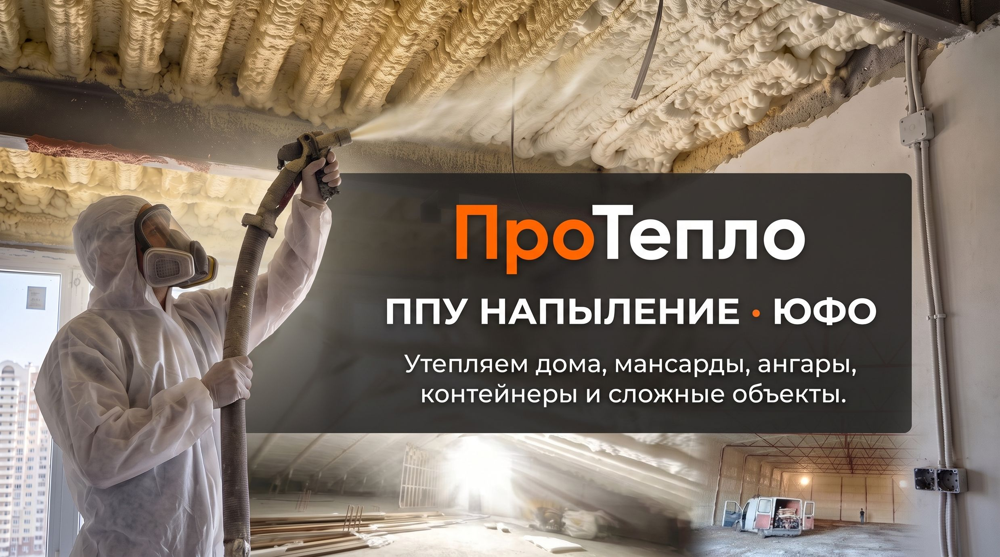
Бесшовное утепление пенополиуретаном для частных, коммерческих и промышленных объектов.
ПроТепло — команда специалистов по напылению ППУ с опытом более 10 лет. Работаем по ЮФО и в Крыму, берём частные, коммерческие и промышленные объекты. Выполняли работы — от мансард и частных домов до ангаров, складов и контейнерных зданий.
Мы не экономим на материалах, используем профессиональное оборудование, заранее согласовываем условия работ и отвечаем за качество на каждом квадратном метре.
Частные дома, дачи, коттеджи, бани, бассейны, мансарды, чердаки, кровли, стены, полы и фундаменты.
Ангары, склады, производственные цеха, коммерческие помещения, гаражи, подсобные помещения и фасады.
Контейнеры, модульные дома, бытовки, холодильные камеры, прицепы, полуприцепы, вагоны, лодки, катера и яхты.
Бесшовное покрытие помогает предотвращать возникновение мостиков холода.
Материал заполняет щели, стыки и труднодоступные участки конструкции.
Хорошо сцепляется с бетоном, металлом, деревом и кирпичом.
Подбираем плотность, тип ячейки и толщину слоя для внутреннего и наружного утепления, влажных зон, кровли, стен и пола.
ППУ сочетает теплоизоляционные и шумопоглощающие свойства в зависимости от состава и типа ячейки.
Срок службы материала — более 50 лет при соблюдении технологии и условий эксплуатации.
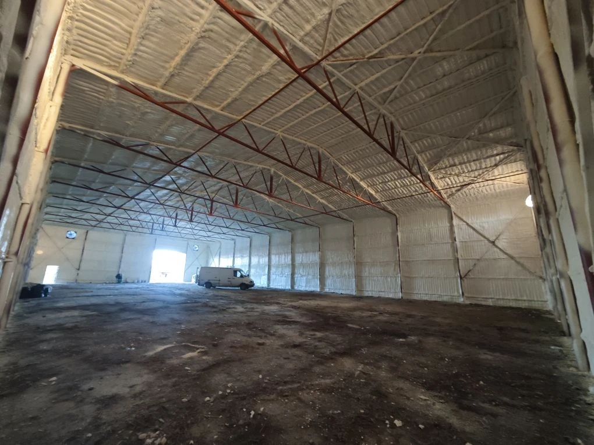
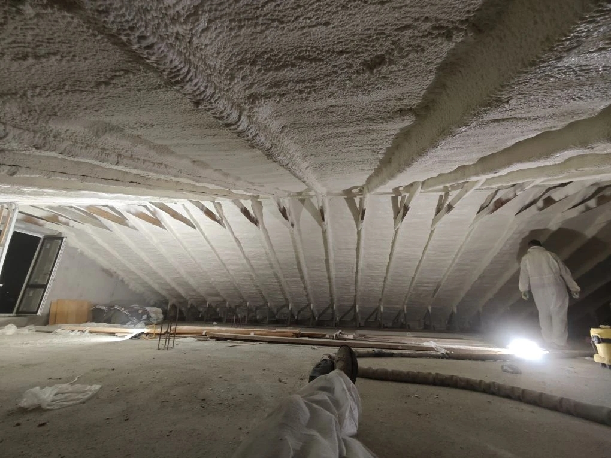
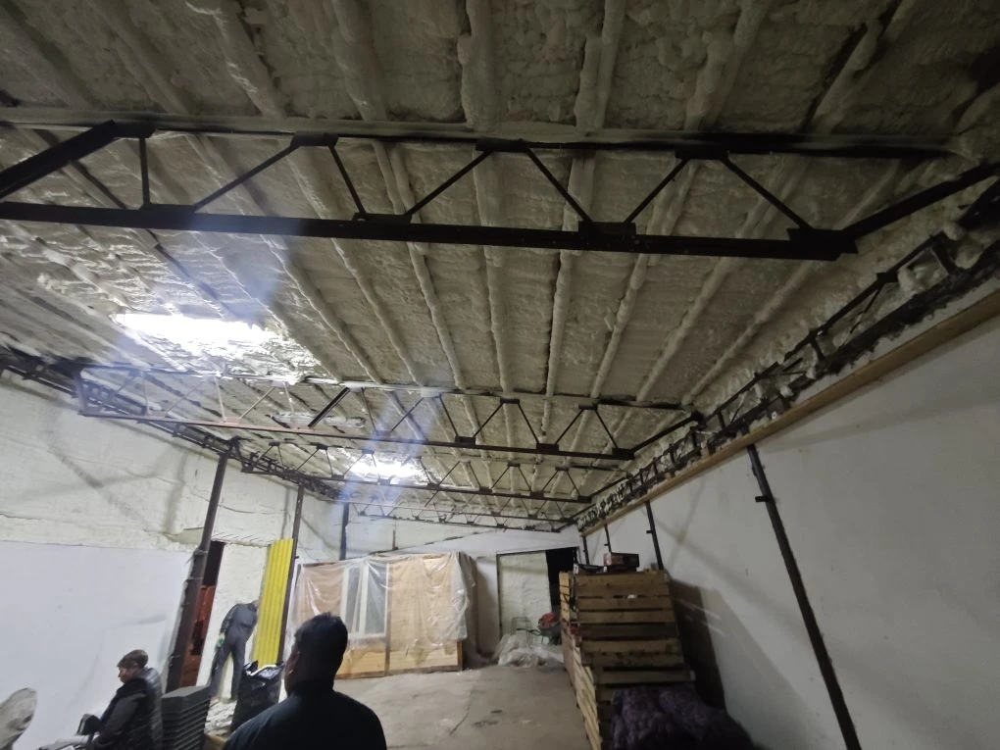
.jpg)
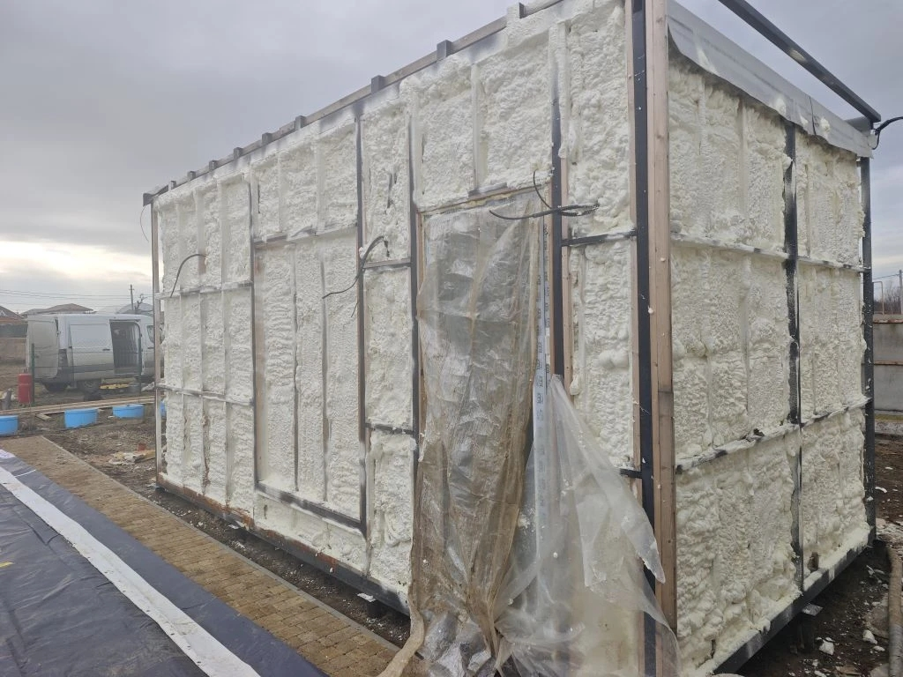
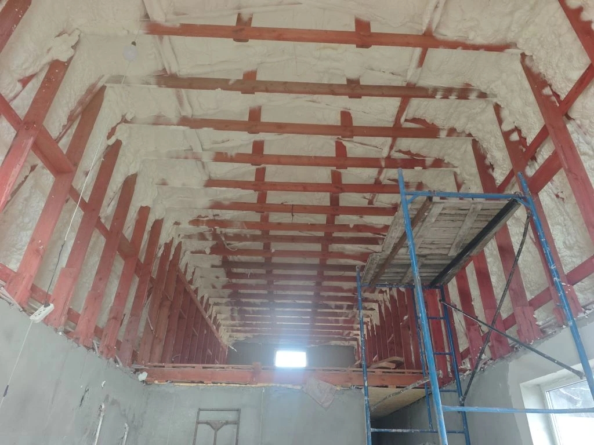
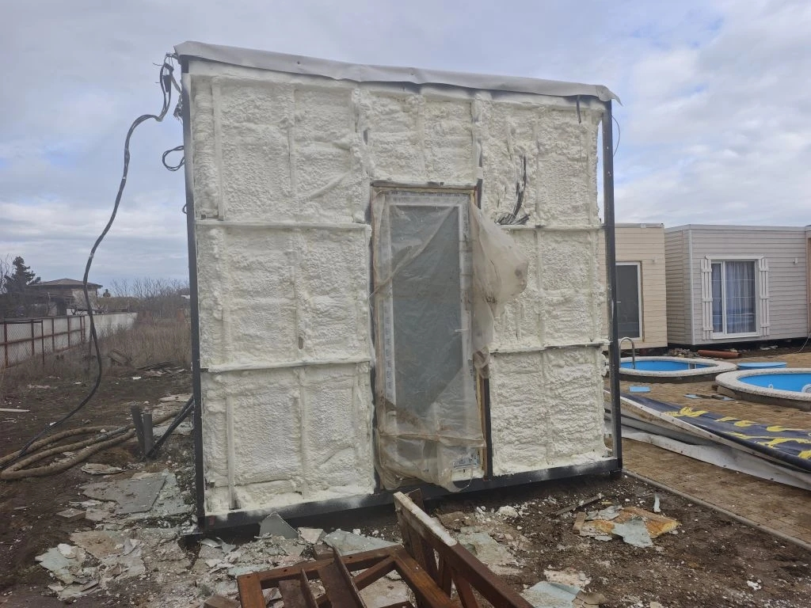
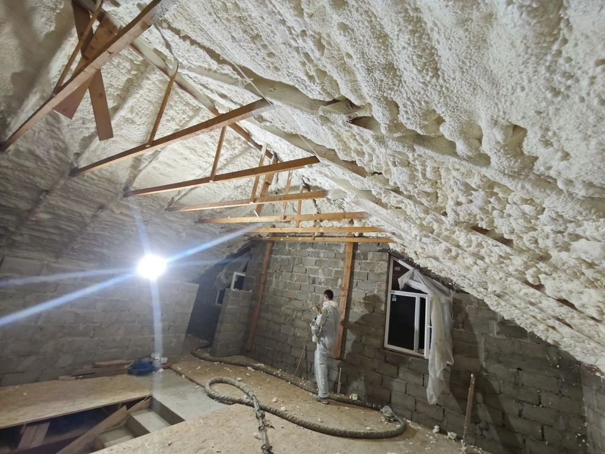
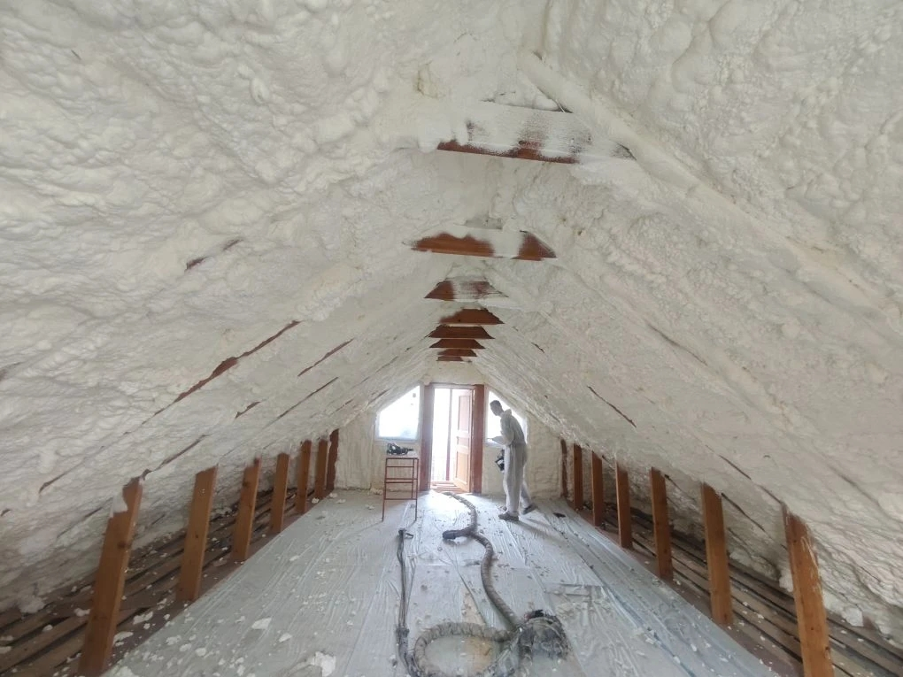
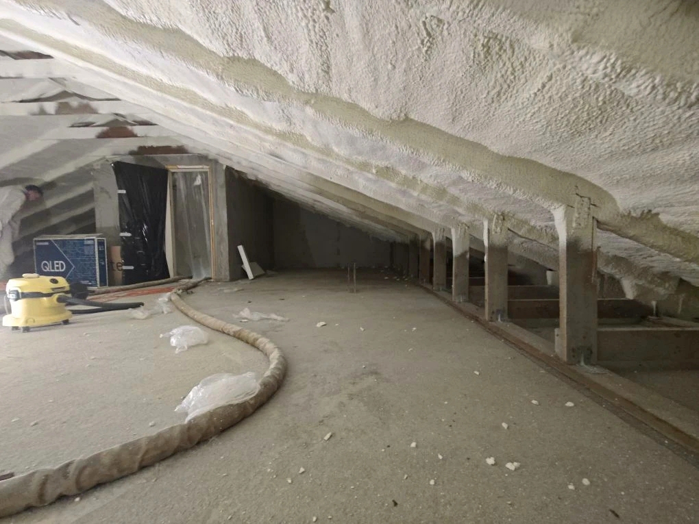
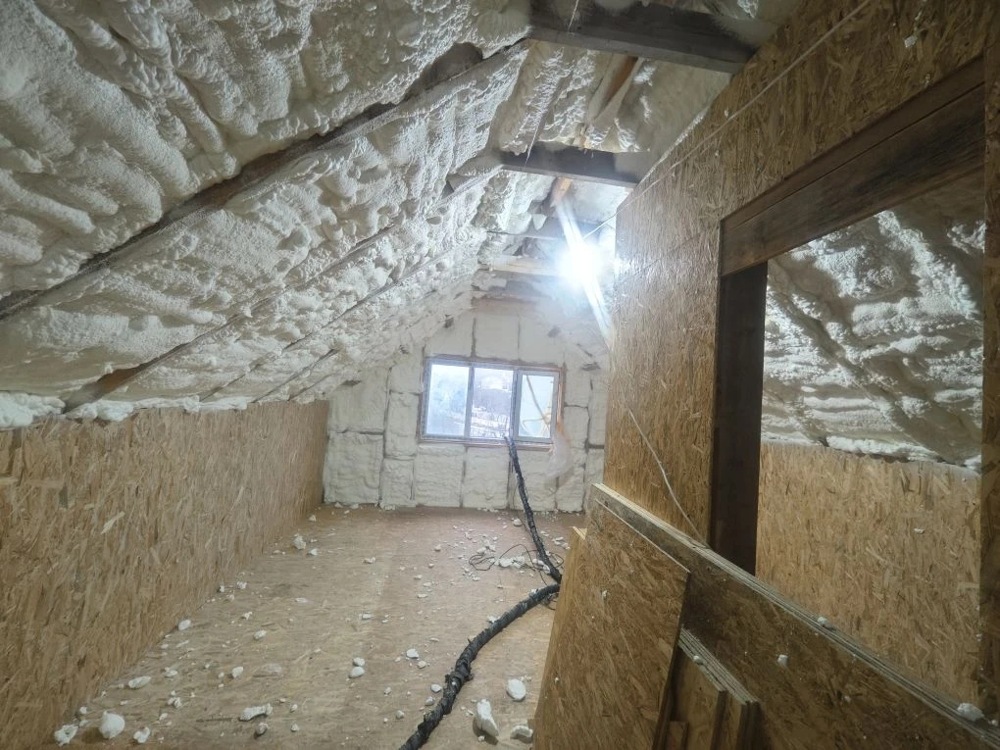
_обработано.jpg)
Бесплатно выезжаем на объект, делаем замер и консультацию.
Оцениваем площадь и состояние конструкции, выбираем тип ППУ и толщину слоя. При необходимости используем тепловизор и влагомер.
Готовим прозрачную смету, согласовываем сроки и заключаем договор.
Подготавливаем зону и защищаем участки, которые не должны соприкасаться с составом.
Выполняем напыление профессиональным оборудованием.
Проводим контроль качества, уборку и передаём фотоотчёт.
Средний объект часто выполняется за один день, но точный срок определяется после замера.